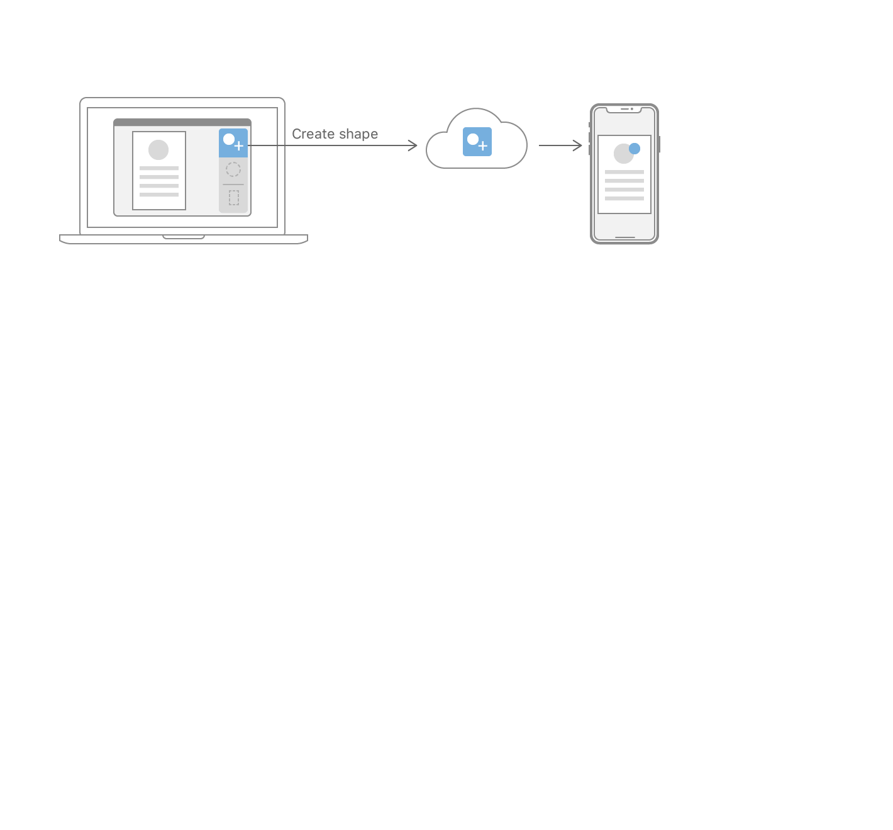

Implementing Handoff in Your App
Handoffをあなたのアプリにおいて実装する
Create, send, and receive user activities directly.
ユーザアクティビティを直接に作成、送信、そして受信します。
Framework
フレームワーク
Foundation
Overview
概要
Use Handoff to transfer activities the user starts on one iOS, watchOS, or macOS device to a different device. For example, a vector graphics app on macOS can send details about an in-progress editing action to the user’s iPhone so that editing can continue there.
Handoffを使ってさまざまなアクティビティ、あるiOS、watchOS、またはmacOSデバイス上のさまざまなユーザ状態を、異なるデバイスに転送します。例えば、macOS上のあるベクターグラフィックアプリは、進行中の編集行動についての詳細を、そのユーザのもつiPhoneに送信できます、そうしてその編集はそこで継続できます。

You implement Handoff in your app by:
あなたは、Handoffをあなたのアプリにおいて以下によって実装します：
Updating the activity instances as the user performs actions in your app.
アクティビティインスタンスを、ユーザがあなたのアプリにおいてさまざまな動作を実行するにつれて更新する。
Receiving activities from Handoff in your app on other devices.
アクティビティを別のデバイス上のあなたのアプリにおいてHandoffから受け取る。
Declare Handoff Activities in Your App’s Info.plist
HandoffアクティビティをあなたのアプリのもつInfo.plistにおいて宣言する
Start by identifying which activities make sense to use with Handoff. Choose activities that represent what the user is doing at some point in time, like creating a shape or editing document properties. Choose a universally-unique identifier string for each of your activities, using a reverse-DNS pattern, like com.example.app.activity-name.
どのアクティビティがHandoffで使うのに筋が通っているか明確にすることによって始めてください。ユーザがある時点で行っている何かを表すアクティビティを選んでください、図形を作成するまたは書類プロパティを編集するのような。あなたのアクティビティのそれぞれに対して普遍的に特有な識別子文字列を選んでください、逆DNS様式を使って、com.example.app.activity-nameのように。
You use your app’s Info.plist file to declare that your app can receive an activity from Handoff. Create a new top-level entry in this file with the key NSUserActivityTypes and with the type Array. Each member of the array should be a String whose value is one of your activity identifiers. The following example shows the Info.plist XML source of a NSUserActivityTypes entry that declares three activities that the app can continue:
あなたは、あなたのアプリのもつInfo.plistファイルを使って、あなたのアプリがアクティビティをHandoffから受け取り可能であることを宣言します。新しいトップレベル登録項目をこのファイルにおいてキーNSUserActivityTypesでそして型Arrayで作成してください。その配列の各項は、値があなたのアクティビティ識別子の１つであるStringでなければなりません。以下の例は、NSUserActivityTypes登録項目のInfo.plist XMLソースを示します、それはアプリが継続可能な３つのアクティビティを宣言します：
Your app doesn’t need to send and receive the same set of identifiers on all platforms. For example, you might have a large macOS app and a suite of smaller iOS apps. In this case, the macOS app might handle all your activities, while each iOS app would handle a subset of these activities. Also, while watchOS can send user activities, it cannot receive them, so watchOS apps don’t declare an NSUserActivityTypes property.
あなたのアプリは、同じひとそろいの識別子を全てのプラットホーム上で送信および受信する必要はありません。例えば、あなたはある大きなmacOSアプリそして一揃いのより小さないくつかのiOSアプリを持つかもしれません。この場合には、macOSアプリは全てのあなたのアクティビティを取り扱うかもしれません、一方で各iOSアプリはそれらアクティビティの部分集合を取り扱うでしょう。また、watchOSはユーザアクティビティそれらを送信できる一方で、それはそれらを受信できません、それでwatchOSアプリはNSUserActivityTypesプロパティを宣言しません。
Your app can have many activities, each of which has different details to send to Handoff. Identify what information you’ll need to recreate the activity on the receiving device. Be careful to only include the transient details of the user activity, and not any information that the app needs to store permanently. For example, if a user is working on a document, the activity should indicate the document—and possibly what part of the document—the user is editing. Don’t include the document itself as part of the activity, since the user could launch your app without Handoff, such as by tapping or clicking its app icon. Instead, use techniques like iCloud Drive to share documents between the user’s devices.
あなたのアプリは、多くのアクティビティを持つことができ、そのそれぞれはHandoffに送信する異なる詳細を持ちます。アクティビティを受け手側デバイス上で回復するのにどんな情報をあなたは必要とするかを明確にしてください。ユーザアクティビティの一過性の詳細だけを含むように、そしてアプリが永続的に格納する必要があるどんな情報も含まないように、気をつけて下さい。例えば、ユーザがある書類上で作業しているならば、アクティビティはユーザが編集している書類 — そしてことによると書類の何かの部分 — を指し示すべきです。書類それ自体をアクティビティの一部として含まないでください、ユーザはあなたのアプリをHandoffなしで起動できるので、たとえばそのアプリアイコンをタップやクリックすることによって。代わりに、iCloud Driveのようなテクニックを使ってユーザのもつデバイス間で書類を共有してください。
Create User Activity Objects
ユーザアクティビティオブジェクトを作成する
At runtime, create instances of NSUserActivity for each of your app’s activities. Use the same identifier strings that you used in the Info.plist to indicate which activities your app can continue.
実行時に、NSUserActivityのインスタンスをあなたのアプリのもつアクティビティのそれぞれに対して作成してください。あなたがInfo.plistで使ったのと同じ識別子文字列を使って、あなたのアプリが継続できるのはどのアクティビティかを指し示してください。
The NSUserActivity class contains a userInfo dictionary that you use to recreate the activity on other devices. The activity type also has a requiredUserInfoKeys property that you populate with the minimal set of dictionary keys to make the activity restorable. The activity also contains a user-readable title property that you should set. If the activity also supports search, the system displays this title in the search results.NSUserActivityクラスは、あるuserInfo辞書を含みます、それはあなたがアクティビティを他のデバイス上で回復するのに使うものです。アクティビティ型はまた、あるrequiredUserInfoKeysプロパティを持ちます、それはあなたが辞書キーの最小の集合で満たすものです。アクティビティはまた、ユーザに読みやすいtitleプロパティを含みます、それはあなたが設定するべきものです。アクティビティがまた検索をサポートするならば、システムはこのタイトルを検索結果において表示します。
The NSResponder (macOS) and UIResponder (iOS) classes define a userActivity property. Since NSViewController and UIViewController are subclasses of these responder types, you can set this property to represent the activity the controller is managing. Your app can share a single activity across multiple view controllers. Conversely, if a single view controller supports multiple activities, you can reassign the view controller’s userActivity to different NSUserActivity instances as needed.NSResponder（macOS）およびUIResponder（iOS）クラスは、userActivityプロパティを定義します。NSViewControllerとUIViewControllerがこれらレスポンダ型のサブクラスであることから、あなたはこのプロパティを設定して、コントローラが管理しているアクティビティを表せます。あなたのアプリは、複数のビューコントローラにまたがって単一のアクティビティを共有できます。逆に、単一のビューコントローラが複数のアクティビティをサポートするならば、あなたはビューコントローラのもつuserActivityを異なるNSUserActivityインスタンスに再割り当てできます、必要に応じて。
Update Activities While the User is Active
ユーザが活動的である間にアクティビティを更新する
As your user interacts with your app, update the user activity to save the state of their interaction. If you have set the userActivity property of a responder, the system automatically calls its updateUserActivityState: (iOS) or updateUserActivityState: (macOS) method. Override this method to write new values to the activity’s userInfo dictionary.
あなたのユーザがあなたのアプリと相互作用するにつれて、ユーザアクティビティを更新してそれら相互作用の状態を保存してください。あなたがあるレスポンダのuserActivityプロパティを設定しおわるならば、システムは自動的にそれのupdateUserActivityState:（iOS）またはupdateUserActivityState:（macOS）メソッドを呼び出します。このメソッドをオーバーライドすることで新しい値をアクティビティのもつuserInfo辞書に書き出してください。
The keys and values you use in userInfo must be of the types NSArray, NSData, NSDate, NSDictionary, NSNull, NSNumber, NSSet, NSString, or NSURL (or their Swift-bridged equivalents). Create a dictionary with any data needed to recreate the activity on the other device, then call addUserInfoEntriesFromDictionary: to update the activity. It’s also a good idea to provide a key-value pair that versions the dictionary itself. That way, you can change the activity’s dictionary representation later and be able to detect incompatible versions.
あなたがuserInfoにおいて使うキーと値は、型NSArray、NSData、NSDate、NSDictionary、NSNull、NSNumber、NSSet、NSString、またはNSURLのものでなければなりません（またはそれらのSwiftブリッジされた相当物）。アクティビティを他のデバイス上で回復するために必要とされる何らかのデータでひとつの辞書を作成してください、それからaddUserInfoEntriesFromDictionary:を呼び出すことでアクティビティを更新してください。そのバージョンのキー値ペアひとつで辞書それ自身を提供することもまたよい考えです。そのやり方で、あなたはアクティビティのもつ辞書表現を後で変更できます、そして互換性のないバージョンを検知できます。
Transfer as small a payload in the userInfo as possible, keeping the total size under 3KB. If you must transfer more data than this, use continuation streams to connect the two devices directly (see Working with Continuation Streams).
可能な限り小さいペイロードをuserInfoにおいて転送して、全体の大きさを３KB未満に保ってください。あなたがこれより多くのデータを転送しなければならないならば、継続ストリームを使って２つのデバイスを直接に接続してください（継続ストリームを扱うを見てください）。
Receive User Activities in the Application Delegate
ユーザアクティビティをアプリケーション委任先において受け取る
When the user launches your app from Handoff on another device, the app receives callbacks to methods in its application delegate. You implement these methods to accept the activity and restore its state in your app.
別のデバイス上でユーザがあなたのアプリをHandoffから起動する場合、アプリはそれのアプリケーション委任先におけるメソッドそれらへのコールバックを受け取ります。あなたは、これらメソッドを実装することで、アクティビティを受け入れて、それの状態をあなたのアプリにおいて回復します。
Handoff provides the activity to your app in the application:continueUserActivity:restorationHandler: (iOS), or application:continueUserActivity:restorationHandler: (macOS) delegate method. Implement the method by creating an array of view controllers that need to update for the activity, and provide this array to the completion handler. Return YES if your implementation successfully handled the activity, or NO if it did not. The following example shows an iOS app delegate finding its top view controller and providing it to the completion handler.
Handoffは、アクティビティをあなたのアプリに対してapplication:continueUserActivity:restorationHandler:（iOS）、またはapplication:continueUserActivity:restorationHandler:（macOS）の委任先メソッドにおいて提供します。メソッドを、アクティビティに対する更新に必要であるビューコントローラからなるある配列を作成することによって実装してください、そしてこの配列を完了ハンドラに提供してください。YESを返してください、もしあなたの実装がうまくアクティビティを取り扱ったならば、またはNOをもしそれがそうしなかったならば。以下の例は、iOSアプリ委任先がそれのトップビューコントローラを見つけ出してそれを完了ハンドラに提供しているのを示します。
Continue the Activity in Your App
アクティビティをあなたにアプリにおいて継続する
Each view controller provided to the completion handler in the previous step receives a call to its restoreUserActivityState: (iOS), or restoreUserActivityState: (macOS) method. Use this method to update the view controller’s state to match the state of the originating device. If you have several activity types, use the activityType to determine which activity you are handling. Then, get the values from the activity’s userInfo dictionary to update the view controller’s state.
前の段階において完了ハンドラに提供された各ビューコントローラは、それのrestoreUserActivityState:（iOS）、またはrestoreUserActivityState:（macOS）メソッドへのある呼び出しを受け取ります。このメソッドを使って、ビューコントローラのもつ状態を更新して、元のデバイスの状態と合致するようにしてください。あなたがいくつかのアクティビティ型を持つならば、activityTypeを使ってどのアクティビディをあなたは取り扱っているか決定してください。それから、そのアクティビティのもつuserInfo辞書からいくつかの値を取得することで、ビューコントローラのもつ状態を更新してください。
overridefuncrestoreUserActivityState(_ userActivity: NSUserActivity) { super.restoreUserActivityState(userActivity)guard userActivity.activityType == "com.example.myapp.create-shape",let type = userActivity.userInfo?["shape-type"] as? String,let version = userActivity.userInfo?["activity-version"] as? Int, version >= 1else {return } createShape(type: type)}
For URLs transferred in the userInfo dictionary, you must first call startAccessingSecurityScopedResource and it must return YES before you can access the URL. Call stopAccessingSecurityScopedResource when you finish using the URL. Also be aware that the system modifies file: URLs pointing to iCloud documents, so that they point to the same document on the receiving device.userInfo辞書において転送されたURLに対して、あなたは最初にstartAccessingSecurityScopedResourceを呼び出さなければなりません、そしてそれがYESを返さなければなりません、あなたがURLにアクセスするに先立って。stopAccessingSecurityScopedResourceをあなたがURLの使用を終了する時は呼び出してください。またシステムはiCloud書類を指しているfile: URLそれらを修正することに気をつけてください、それでそれらは同じ書類をその受け取っているデバイス上で指します。
Provide a continuous user experience by capturing information from your app and displaying this information as proactive suggestions across the system.
情報をあなたのアプリからキャプチャして、この情報を積極的提案としてシステムの至る所で表示することによって、途切れのないユーザ体験を提供してください。